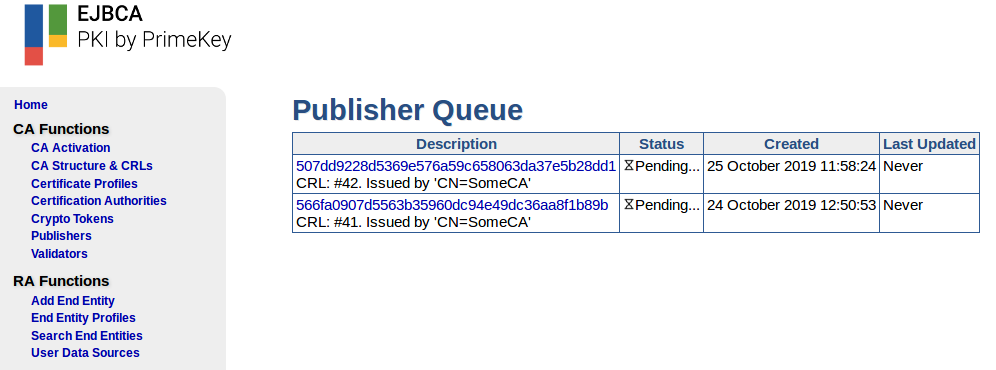

EJBCA 7.3.1 Release Notes
The PrimeKey EJBCA team is pleased to announce the release of EJBCA 7.3.1.
The main focus of this release is improving the handling of Certificate Transparency (CT) precertificates. The release also brings a feature that allows you to view more information about events in the Publisher Queue.
Highlights
View Queued Publisher Item Information
Items published with a publisher in EJBCA can be placed in a queue if direct publishing fails or because the publisher is configured to only use a queue for publishing.
The Publisher Queue Status table on the EJBCA CA Web home page has up until now only listed the number of queued events per publisher. Under certain circumstances, entries in the queue may not be able to publish for example, due to a network outage or denied authorization from the target.
As of EJBCA 7.3.1, you can view status information about the queued events indicating why they are still queued, information on the latest updates and links to the relevant object. For more information, see EJBCA Operations Guide.

Persistence of Precertificate
Following a discussion in the mozilla.dev.security.policy group it has been determined that CAs using Certificate Transparency (typically applicable for public CAs) should be able to respond with proper status for CT precertificates. EJBCA has previously been able to partly do this by having the OCSP reply 'good' for non-existing certificates. However, this doesn't entirely meet the new requirements.
With EJBCA 7.3.1, precertificates will be stored in the database and published to configured VA databases. This allows for better control, history, and most importantly, OCSP lookup for precertificates. Specifically in cases where a precertificate has been generated and no final certificate was issued, which for example may occur if an insufficient number of signed certificate timestamps (SCTs) were received from the configured CT logs.
For more information, see Persisting Precertificates and OCSP in Certificate Transparency.
Upgrade Information
Review the EJBCA 7.3.1 Upgrade Notes for important upgrade notes. For upgrade instructions and information on upgrade paths, see Upgrading EJBCA.
Change Log: Resolved Issues
For full details of fixed bugs and implemented features in EJBCA 7.3.1, refer to our JIRA Issue Tracker.
Issues Resolved in 7.3.1
Released November 2019
New Features
ECA-6784 - Improved peer publisher reporting - Create and download report after manual synchronization
ECA-8461 - Add the ability to view queued publisher items in the CA web
Tasks
ECA-7272 - Update readme documentation for dependency libs
ECA-8450 - Add OWASP Dependency checker to Jenkins
ECA-8638 - Update commons-beanutils to version 1.9.4
ECA-8639 - Add CT changes to documentation
ECA-8640 - Upgrade nimbus-jose to version 8.2
ECA-8643 - Update db2jcc4.jar used for jenkins tests
ECA-8644 - Update clover.jar, only used for tests, to version 4.4.1
Improvements
ECA-6205 - Remove unused method testImportFromZip
ECA-6979 - If a CT-configured certificate does not accumulate enough SCTs, it should be written to update OCSP, but not distributed to subscriber
ECA-8524 - Check for expired key binding certificates in the Configuration Checker
ECA-8635 - CT systemtest - Precert store
ECA-8648 - Notify if a search result is a pre-certificate in RA web
ECA-8660 - Add GCM mode ciphers for outgoing peer connections
Bug Fixes
ECA-8377 - Regression: Fast-fail is triggered when a CT submission is interrupted
ECA-8404 - CT publisher with direct publishing enabled, publishes old certificate on renewal
ECA-8630 - Incorrect handling of empty subjectAltName in a CSR in the RA UI
ECA-8658 - Error downloading CV certificate via Admin GUI search end entities screen
ECA-8667 - Update CESeCoreUtils and back-port build.cesecore.p11.jar option
ECA-8678 - Inspect publisher queue page shows wrong hour
ECA-8685 - "CMP" mentioned in EST CLI commands